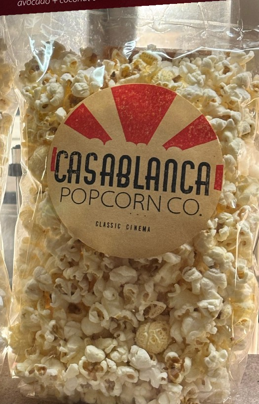
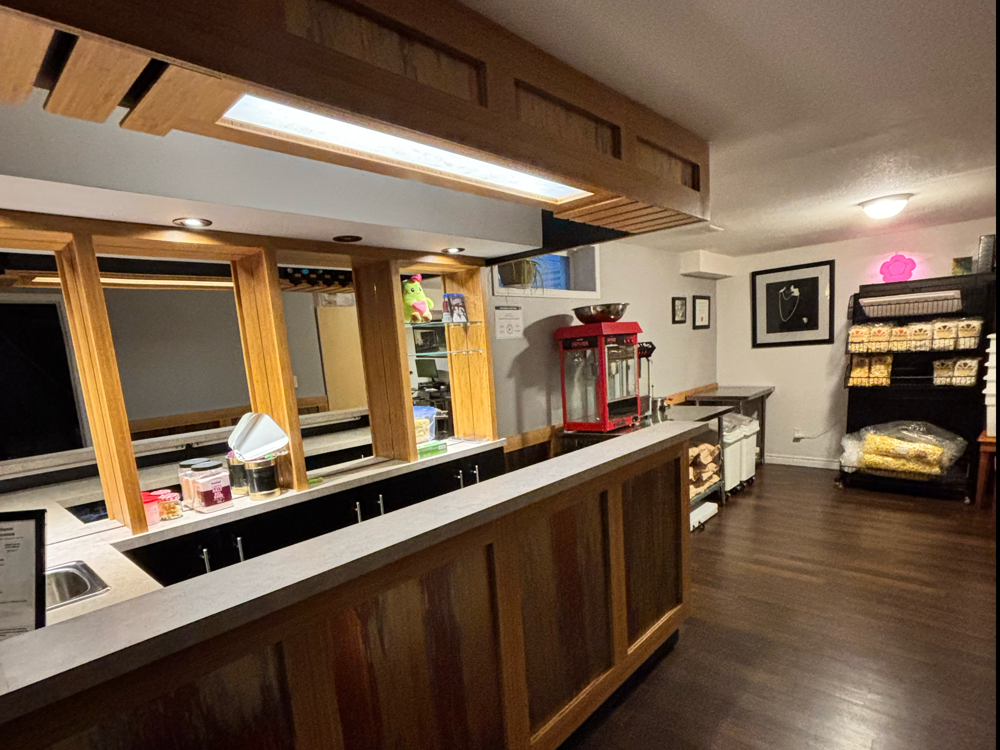
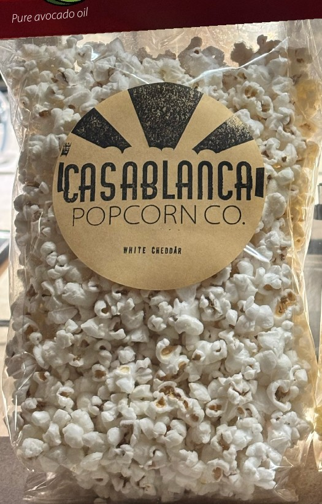
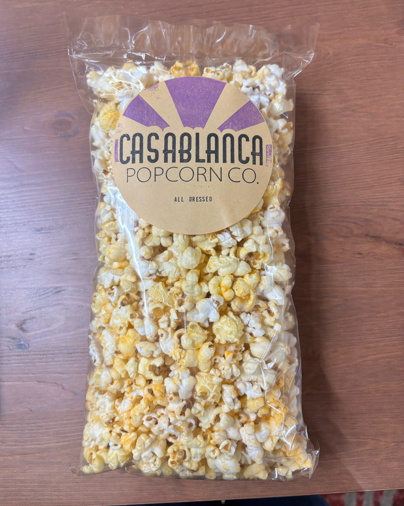

The original
Classic Cinema
Inspired by the golden age of cinema, our yellow butterfly popcorn has a hearty classic crunch and is popped in coconut and avocado oils for that timeless movie night flavour.

Our popcorn boutique
Welcome to Casablanca Popcorn, a popcorn boutique with a love of movie magic and a personal touch.
Our commercial kitchen is located in Kitchener, where we pop in small, intimate batches using coconut and avocado oils. Our popcorn is gluten-free and made with care, one batch at a time.
In October 2026, we opened our booth in Peddler’s Village at St. Jacobs Farmers’ Market—a little corner of Casablanca where you can meet us and find your favourite flavour.
Come say hello
Our popcorn
Our signature flavours, with a featured flavour in the spotlight below.

The original
Inspired by the golden age of cinema, our yellow butterfly popcorn has a hearty classic crunch and is popped in coconut and avocado oils for that timeless movie night flavour.

Creamy and savoury
Light and airy white hulless popcorn with a delicate crunch, finished with savoury white cheddar for a creamy cheesy flavour.

Featured flavour
A new flavour takes the spotlight. Meet All Dressed, our featured popcorn for your next movie night or market stroll.
Find us at the marketOur Ontario-grown kernels
We source our kernels from Uncle Bob’s Popcorn, a family-run Ontario grower that has been growing popcorn since 1985. They are also Canada’s only grower of specialty white hull-less popcorn—the light, delicate variety used for our White Cheddar.
Meet Uncle Bob’sOur bags
Good popcorn deserves thoughtfully chosen packaging. We use bags made with NatureFlex™ film, a cellulose-based material derived from renewable wood pulp.
NatureFlex™ film is certified compostable. For your finished bag, follow the disposal instructions supplied with the packaging and check what your local composting programme accepts.
About NatureFlex™Behind the name
Grand Art Deco theatres, glowing marquees, velvet curtains, and freshly popped popcorn—that is the feeling we are bringing back.
Our name is inspired by Casablanca, an enduring film made to be discovered and shared. Its timeless quality inspires every batch.
Say hello